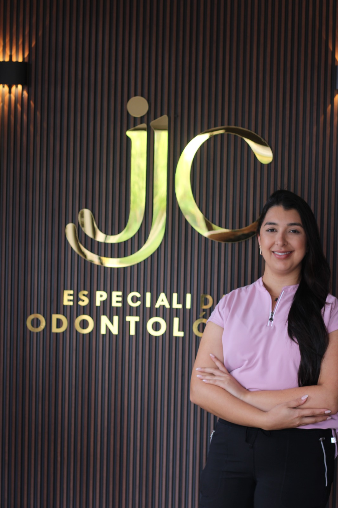
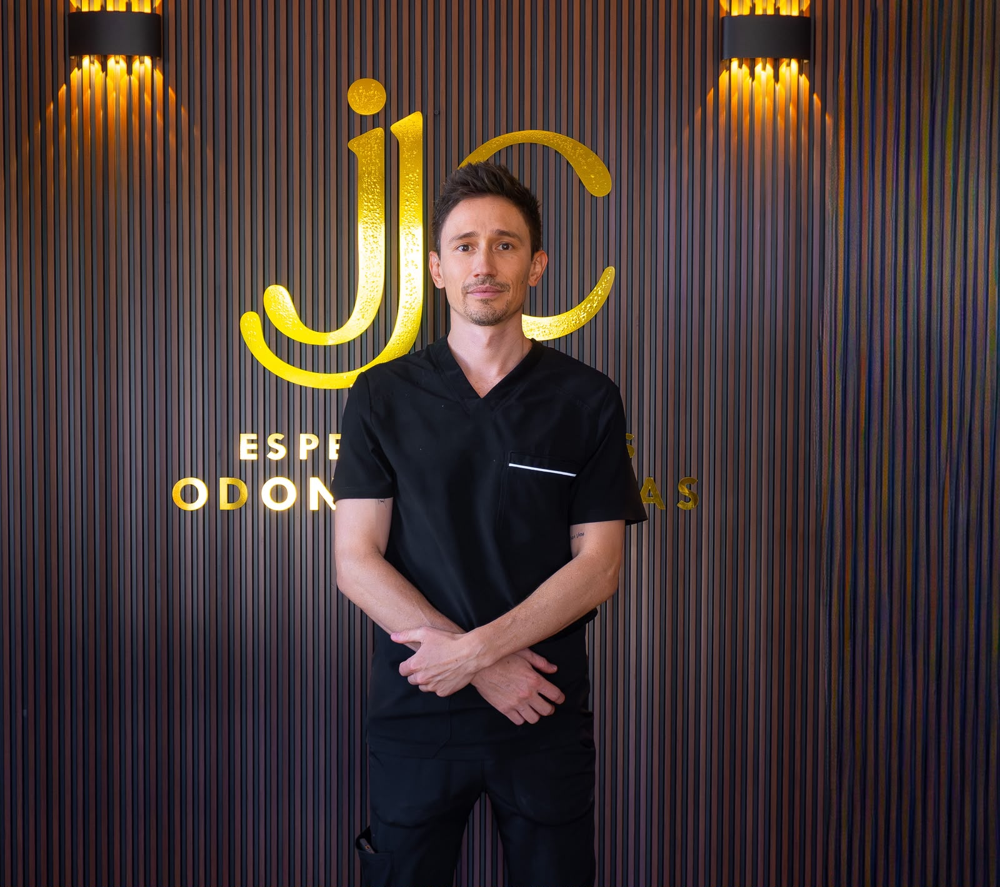
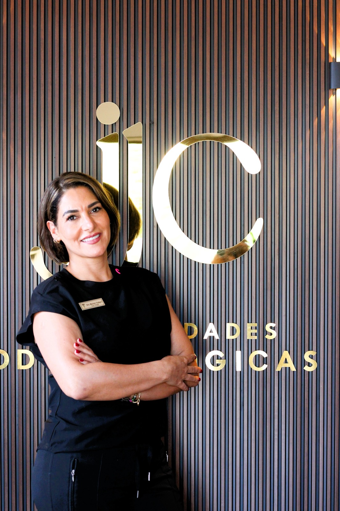
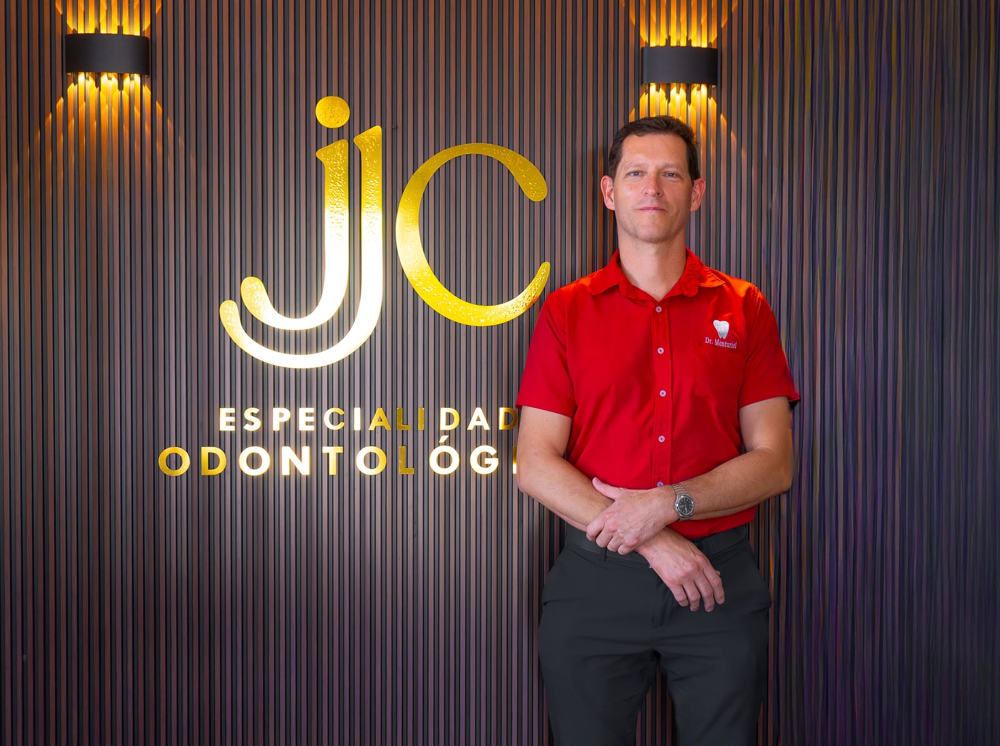
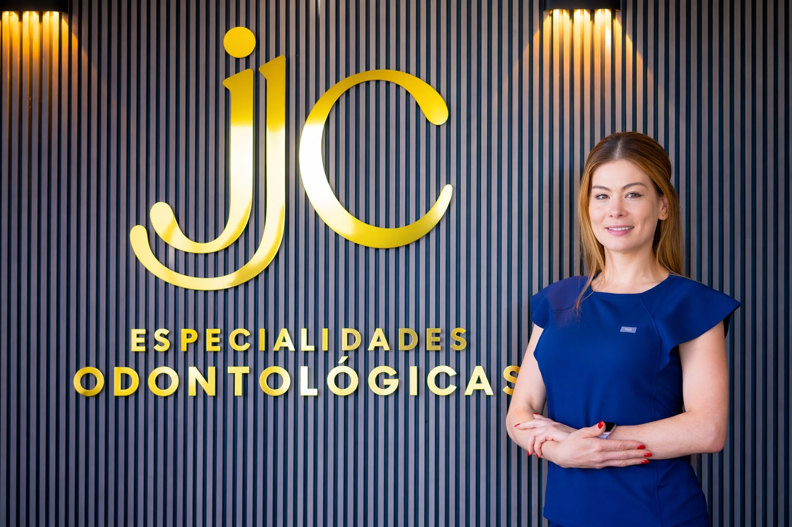

Profesionales comprometidos con tu salud bucal y tu bienestar en cada etapa de tu vida.

Ortodoncista con más de tres décadas de experiencia clínica. Reconocido por su compromiso con la excelencia profesional, la formación continua y la atención personalizada de sus pacientes.
Miembro activo de la Academia Costarricense de Ortodoncia (ACO) y de la Asociación Latinoamericana de Ortodoncia (ALADO), organizaciones que promueven el desarrollo y la actualización de la ortodoncia a nivel nacional y latinoamericano.
Bajo su dirección, y con el apoyo de un equipo multidisciplinario de especialistas, JJC Especialidades Odontológicas ha atendido a más de 2,000 pacientes, con clínicas en San Rafael de Oreamuno, Orosí y Santa María de Dota, en la provincia de Cartago.

Ortodoncista con más de tres décadas de experiencia clínica. Reconocido por su compromiso con la excelencia profesional, la formación continua y la atención personalizada de sus pacientes.
Colegio Universitario de Cartago (2000)
Diplomado en Mecánica Dental
Universidad Veritas (2010)
Cirujano Dentista
Especialista en Ortodoncia y Ortopedia Funcional (2016)
Miembro activo de la Academia Costarricense de Ortodoncia (ACO) y de la Asociación Latinoamericana de Ortodoncia (ALADO), organizaciones que promueven el desarrollo y la actualización de la ortodoncia a nivel nacional y latinoamericano.
Bajo su dirección, y con el apoyo de un equipo multidisciplinario de especialistas, JCCP Especialidades Odontológicas ha atendido a más de 2,000 pacientes, con clínicas en San Rafael de Oreamuno, Orosí y Santa María de Dota, en la provincia de Cartago.

Universidad Latina (2015) — Licenciatura en Odontología.
Centro de Capacitación en Ortodoncia y Ortopedia (2020) — Diplomado en Ortodoncia.
Amante de la naturaleza, de la conexión con ella y de la playa.

Universidad de Costa Rica (2017) — Cirujano Dentista.
Énfasis en cirugía, implantología, estética y rehabilitación oral.
Gustos e intereses: amante de la naturaleza, la lectura y fotógrafo en proceso.

Universidad de Costa Rica (2017) — Cirujana Dentista.
Atención odontológica integral a población general, con especial enfoque en personas con discapacidad, pacientes médicamente comprometidos y adultos mayores.
Intereses personales: disfruta de la lectura, el estudio continuo de la farmacología y la literatura en general.

Universidad Latina de Costa Rica (2004) — Licenciatura en Odontología con más de 20 años de experiencia.
Formación profesional:
Sus mayores pasatiempos son la cocina y realizar actividad física.

Universidad Latina (2017) — Énfasis en prostodoncia, Hospital Blanco Cervantes.
Cursos:
Disfruta mucho del arte del bonsái, del café y sus métodos de preparación.

Universidad de Costa Rica (2026) — Odontóloga General.
Atención integral y personalizada para pacientes de todas las edades, enfocada en la prevención, la salud oral y el bienestar del paciente.
Interés en odontología restauradora y en la educación del paciente para el mantenimiento de una buena salud oral.
Gustos e intereses: deporte, cocina y lectura.

Universidad Latina de Costa Rica (2008)
Amplia experiencia en tratamientos de odontología restauradora y estética, rehabilitación de implantes y rehabilitación de prótesis sobre implantes.
Formación en armonización facial.
Comprometida con brindar atención integral y ética, basada en la actualización constante. Además de su profesión, el deporte es parte fundamental de su vida, por lo que la disciplina y el compromiso forman parte de ella.

Universidad Latina de Costa Rica (2017) — Licenciatura en Odontología General.
Pontificia Universidad Javeriana (2019) — Especialidad en Endodoncia.
Como hobby diría que son los deportes: le gusta mucho ver deportes.

Universidad de Costa Rica (1999) — Graduado en Odontología.
Universidad Autónoma de Nuevo León (2004) — Maestría en Endodoncia.
Como particularidad, le gusta mucho la calistenia y correr.

Universidad de Costa Rica (2005) — Licenciado en Odontología.
Pontificia Universidad Javeriana (2009) — Especialista en Endodoncia.
Como pasatiempo le gusta el basketball.

Universidad Veritas (2011) — Cirujano Dentista.
Pontificia Universidad Javeriana, Bogotá (2019) — Graduado de especialista en Periodoncia e implantes dentales.

Universidad Latina de Costa Rica (2018) — Licenciatura en Odontología.
Pontificia Universidad Javeriana, Colombia (2025) — Especialista en Periodoncia.
Énfasis en implantes dentales, manejo de tejidos blandos y regeneración ósea.
Atención a la población en general.
Gustos e intereses:

Universidad Latina de Costa Rica (2017) — Licenciada en Odontología.
Graduada del posgrado de Periodoncia de la Pontificia Universidad Javeriana (2023).

Universidad de Costa Rica (2013) — Cirujana Dentista.
Universidad de Costa Rica (2017) — Especialista en Odontopediatría y Ortopedia Funcional.
Enfoque en la prevención del riesgo biológico y atención infantil de manejo complejo.

Universidad de Costa Rica (2015) — Licenciatura en Odontología.
Universidad de Costa Rica (2023) — Maestría en Prostodoncia.
Gustos e intereses:

Universidad de Costa Rica (2016) — Licenciatura en Odontología.
Universidad Europea de Madrid (2025) — Maestría en prótesis, implantoprótesis y estética dental.
Universidad Complutense de Madrid (2025) — Diploma Universitario en implantología clínica, técnicas quirúrgicas y procedimientos restauradores.

Universidad Latina de Costa Rica (2012) — Licenciado en Odontología.
Universidad Autónoma de México (UNAM) (2018) — Cirujano Maxilofacial.

Universidad de Costa Rica (1991) — Licenciado en Odontología.
Universidad de Costa Rica (1992) — Doctor en Cirugía Dental.
Universidad de Puerto Rico (1998) — Cirugía Oral y Maxilofacial.
Colegio de Médicos y Cirujanos (1998) — Médico Cirujano.

Universidad Latina de Costa Rica (2015) — Licenciatura en Odontología.
Universidad de los Andes, Chile (2019) — Especialidad en Trastornos Temporomandibulares.
Áreas de práctica:
Gustos e intereses: naturaleza, desarrollo personal y playa.